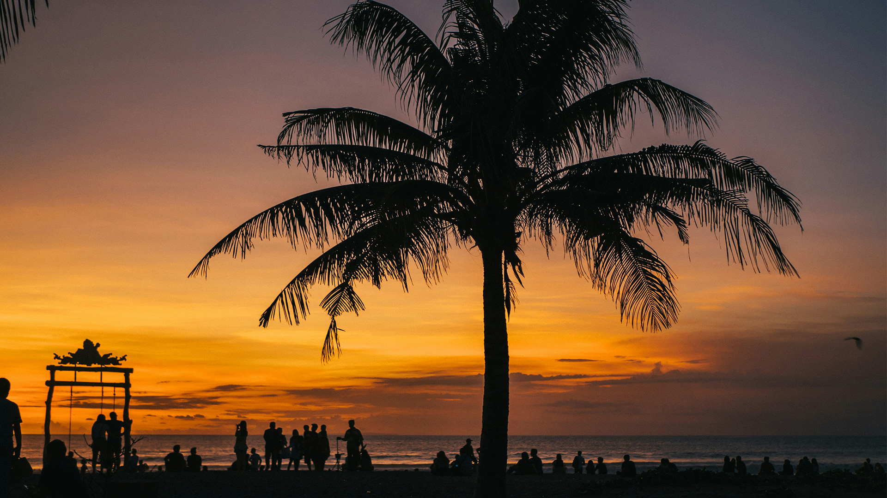
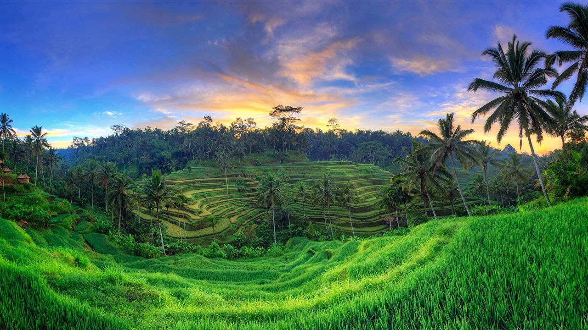
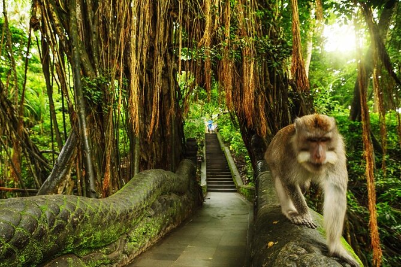
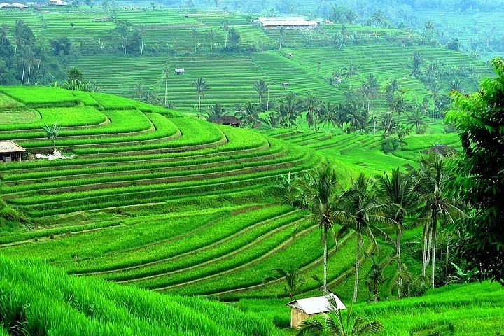
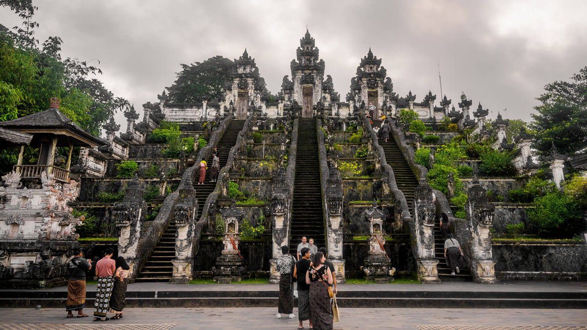
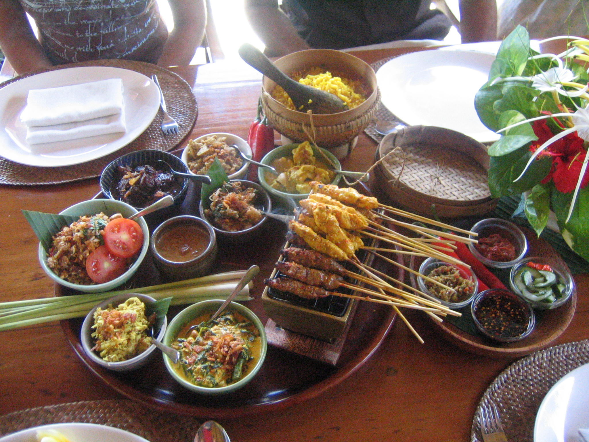

Sunset in Bali: A Journey to Paradise

Bali, the Island of the Gods, has always been a dream destination for travelers seeking a blend of natural beauty, rich culture, and spiritual serenity. My journey to Bali began with a long flight from the bustling city life, but as soon as I stepped off the plane in Denpasar, the warm tropical air and vibrant energy welcomed me like an old friend. This island isn't just a vacation spot—it's a transformative experience that lingers in your memories forever.
Arrival and First Impressions
Touching down in Bali felt like entering a different world. The Ngurah Rai International Airport buzzed with the excitement of arrivals, and the scent of frangipani flowers filled the air. I rented a scooter right away— the quintessential way to explore Bali's winding roads. My first stop was a homestay in Seminyak, where the beachfront vibe was electric. Walking along the sandy shores at sunset, I realized Bali's magic starts the moment you arrive. The locals' warm "Selamat datang" (welcome) greetings set the tone for an unforgettable adventure.
Exploring Ubud: The Cultural Heart

The adventure truly began in Ubud, Bali's artistic and spiritual center. Nestled amidst lush rice terraces, Ubud is a haven for art lovers and nature enthusiasts. I spent mornings wandering through the Monkey Forest, where cheeky macaques swung from ancient trees and playfully snatched bananas from tourists. The forest's dense canopy and hidden temples created an atmosphere of mystery and wonder.
In the afternoons, I visited the iconic Tegallalang Rice Terraces. These emerald fields, cascading like a living painting, are a UNESCO World Heritage site. Hiking the narrow paths between the terraces, I felt a deep connection to Bali's agrarian roots. The farmers working the fields shared stories of their traditions, and I even tried my hand at planting rice—a humbling experience that taught me about patience and harmony with nature.



The Iconic Sunset at Uluwatu
As the sun began to dip toward the horizon, I made my way to the west coast for what Bali is truly famous for: its breathtaking sunsets. Perched on a cliff at Uluwatu Temple, I watched as the sky transformed into a canvas of fiery oranges, deep purples, and golden hues. The Indian Ocean roared below, crashing against the rocks in a symphony of nature's power.
The experience was heightened by the traditional Kecak fire dance, performed by a circle of men chanting rhythmically as the sun disappeared. It was a moment of pure bliss, where time seemed to stand still, and the worries of the world melted away. Watching the sunset here isn't just about the visuals—it's about feeling the spiritual energy of Bali, where the boundary between earth and sky blurs.
Pro Tip: Arrive early to secure a spot on the cliff. The temple grounds are sacred, so dress modestly and remove shoes when entering. The dance starts around 6 PM, timed perfectly with the sunset.
Adventures Beyond the Sunset
Beyond the sunsets, Bali offered endless explorations. I snorkeled in the crystal-clear waters of Nusa Penida, where vibrant coral reefs and marine life created an underwater paradise. Hiking volcanic Mount Batur at dawn was another highlight—watching the sunrise from the summit, with steaming lava fields below, was awe-inspiring.
The island's cuisine was a culinary delight. From spicy nasi goreng (fried rice) to fresh tropical fruits like rambutan and mangosteen, every meal was an adventure. I learned to make Balinese sambal at a cooking class, discovering the bold flavors that define Indonesian food.


Cultural Insights and Local Encounters
It's the people and their deep-rooted traditions that left the biggest impression on me. Participating in a Balinese ceremony, with its intricate offerings of flowers and incense, reminded me of the island's Hindu heritage. Locals shared stories of their daily rituals, from morning prayers to community festivals.
One evening, I joined a village for a traditional Balinese dance performance. The grace and storytelling in every movement were mesmerizing. These encounters taught me that Bali's true beauty lies in its culture— a blend of spirituality, art, and community that has endured for centuries.
Travel Tips for Your Bali Journey
- Best Time to Visit: Dry season (April to September) for sunny weather and fewer crowds.
- Getting Around: Rent a scooter for freedom, but drive cautiously—traffic can be chaotic.
- Sustainability: Support eco-friendly stays and avoid single-use plastics to preserve Bali's beauty.
- Respect Customs: Cover up at temples, and embrace "Bali time"—there's no rush here.
- Budgeting: Expect $50-100/day for mid-range travel, including food and activities.
If you're planning a trip to Bali, remember to respect the local customs, support sustainable tourism, and embrace the "Bali time" philosophy—there's no rush on this paradise island. Bali isn't just a place; it's an experience that lingers in your soul long after you leave.
Back to Blog